Modelo Original#
1. Introducción#
2. Análisis exploratorio de datos#
import tensorflow as tf
import kagglehub
import os
# Download latest version
path = kagglehub.dataset_download("imetomi/eur-usd-forex-pair-historical-data-2002-2019")
print("Path to dataset files:", path)
C:\Users\planeacion\miniconda3\envs\ml_venv\lib\site-packages\tqdm\auto.py:21: TqdmWarning: IProgress not found. Please update jupyter and ipywidgets. See https://ipywidgets.readthedocs.io/en/stable/user_install.html
from .autonotebook import tqdm as notebook_tqdm
Warning: Looks like you're using an outdated `kagglehub` version (installed: 0.3.13), please consider upgrading to the latest version (1.0.0).
Path to dataset files: C:\Users\planeacion\.cache\kagglehub\datasets\imetomi\eur-usd-forex-pair-historical-data-2002-2019\versions\2
for file in os.listdir(path):
print(file)
eurusd_hour.csv
eurusd_minute.csv
eurusd_news.csv
import pandas as pd
df = pd.read_csv(os.path.join(path, "eurusd_minute.csv"))
print(df.head(10))
print(df.shape)
Date Time BO BH BL BC BCh AO AH \
0 2005-01-02 18:29 1.3555 1.3555 1.3555 1.3555 0.0000 1.3565 1.3565
1 2005-01-02 18:38 1.3555 1.3555 1.3555 1.3555 0.0000 1.3565 1.3565
2 2005-01-02 18:51 1.3562 1.3562 1.3562 1.3562 0.0000 1.3572 1.3572
3 2005-01-02 18:52 1.3560 1.3560 1.3560 1.3560 0.0000 1.3570 1.3570
4 2005-01-02 18:55 1.3563 1.3563 1.3563 1.3563 0.0000 1.3573 1.3573
5 2005-01-02 18:57 1.3562 1.3562 1.3562 1.3562 0.0000 1.3572 1.3572
6 2005-01-02 19:4 1.3564 1.3564 1.3564 1.3564 0.0000 1.3574 1.3574
7 2005-01-02 19:7 1.3565 1.3565 1.3564 1.3564 0.0001 1.3575 1.3575
8 2005-01-02 19:10 1.3564 1.3564 1.3564 1.3564 0.0000 1.3574 1.3574
9 2005-01-02 19:12 1.3564 1.3564 1.3564 1.3564 0.0000 1.3574 1.3574
AL AC ACh
0 1.3565 1.3565 0.0000
1 1.3565 1.3565 0.0000
2 1.3572 1.3572 0.0000
3 1.3570 1.3570 0.0000
4 1.3573 1.3573 0.0000
5 1.3572 1.3572 0.0000
6 1.3574 1.3574 0.0000
7 1.3574 1.3574 0.0001
8 1.3574 1.3574 0.0000
9 1.3574 1.3574 0.0000
(5618819, 12)
print(df.columns.tolist())
print(df.dtypes)
print(df.head())
print('No. of rows, columns:', df.shape)
['Date', 'Time', 'BO', 'BH', 'BL', 'BC', 'BCh', 'AO', 'AH', 'AL', 'AC', 'ACh']
Date object
Time object
BO float64
BH float64
BL float64
BC float64
BCh float64
AO float64
AH float64
AL float64
AC float64
ACh float64
dtype: object
Date Time BO BH BL BC BCh AO AH \
0 2005-01-02 18:29 1.3555 1.3555 1.3555 1.3555 0.0 1.3565 1.3565
1 2005-01-02 18:38 1.3555 1.3555 1.3555 1.3555 0.0 1.3565 1.3565
2 2005-01-02 18:51 1.3562 1.3562 1.3562 1.3562 0.0 1.3572 1.3572
3 2005-01-02 18:52 1.3560 1.3560 1.3560 1.3560 0.0 1.3570 1.3570
4 2005-01-02 18:55 1.3563 1.3563 1.3563 1.3563 0.0 1.3573 1.3573
AL AC ACh
0 1.3565 1.3565 0.0
1 1.3565 1.3565 0.0
2 1.3572 1.3572 0.0
3 1.3570 1.3570 0.0
4 1.3573 1.3573 0.0
No. of rows, columns: (5618819, 12)
import warnings
warnings.filterwarnings("ignore")
import matplotlib
import seaborn
print(matplotlib.__version__)
print(seaborn.__version__)
3.7.5
0.13.2
import pandas as pd
import numpy as np
import seaborn as sns
from matplotlib import pyplot as plt
2.1. Descripción y definición de la variables#
sns.set_style("darkgrid")
Variable |
Descripción |
|---|---|
Time |
Hora en que se midió el precio |
BO |
Precio de apertura Bid1 |
BH |
Precio más alto en el período Bid |
BL |
Precio más bajo en el período Bid |
BC |
Precio de cierre Bid |
BCh |
Cambio entre apertura y cierre Bid |
AO |
Precio de apertura Ask2 |
AH |
Precio más alto en el período Ask |
AL |
Precio más bajo en el período Ask |
1 Bid — Precio al que el mercado compra (perspectiva del vendedor).
2 Ask — Precio al que el mercado vende (perspectiva del comprador).
• No hay presencia de valores faltantes en el dataset
df.isna().sum()
Date 0
Time 0
BO 0
BH 0
BL 0
BC 0
BCh 0
AO 0
AH 0
AL 0
AC 0
ACh 0
dtype: int64
# Combinar Date y Time para la el horario exacto
df_time = df.copy()
if 'Date' in df_time.columns and 'Time' in df_time.columns:
df_time['Datetime'] = pd.to_datetime(df_time['Date'] + ' ' + df_time['Time'])
df_time = df_time.set_index('Datetime')
df_time = df_time.drop(columns=['Date', 'Time'])
df_time = df_time.sort_index()
print(df_time.head())
print(df_time.shape)
BO BH BL BC BCh AO AH \
Datetime
2005-01-02 18:29:00 1.3555 1.3555 1.3555 1.3555 0.0 1.3565 1.3565
2005-01-02 18:38:00 1.3555 1.3555 1.3555 1.3555 0.0 1.3565 1.3565
2005-01-02 18:51:00 1.3562 1.3562 1.3562 1.3562 0.0 1.3572 1.3572
2005-01-02 18:52:00 1.3560 1.3560 1.3560 1.3560 0.0 1.3570 1.3570
2005-01-02 18:55:00 1.3563 1.3563 1.3563 1.3563 0.0 1.3573 1.3573
AL AC ACh
Datetime
2005-01-02 18:29:00 1.3565 1.3565 0.0
2005-01-02 18:38:00 1.3565 1.3565 0.0
2005-01-02 18:51:00 1.3572 1.3572 0.0
2005-01-02 18:52:00 1.3570 1.3570 0.0
2005-01-02 18:55:00 1.3573 1.3573 0.0
(5618819, 10)
df_5m = df_time.resample('5T').median().dropna()
print(df_5m.shape)
print(df_5m.head())
print(df_5m.tail() )
(1153890, 10)
BO BH BL BC BCh AO \
Datetime
2005-01-02 18:25:00 1.35550 1.35550 1.35550 1.35550 0.0 1.35650
2005-01-02 18:35:00 1.35550 1.35550 1.35550 1.35550 0.0 1.35650
2005-01-02 18:50:00 1.35610 1.35610 1.35610 1.35610 0.0 1.35710
2005-01-02 18:55:00 1.35625 1.35625 1.35625 1.35625 0.0 1.35725
2005-01-02 19:00:00 1.35640 1.35640 1.35640 1.35640 0.0 1.35740
AH AL AC ACh
Datetime
2005-01-02 18:25:00 1.35650 1.35650 1.35650 0.0
2005-01-02 18:35:00 1.35650 1.35650 1.35650 0.0
2005-01-02 18:50:00 1.35710 1.35710 1.35710 0.0
2005-01-02 18:55:00 1.35725 1.35725 1.35725 0.0
2005-01-02 19:00:00 1.35740 1.35740 1.35740 0.0
BO BH BL BC BCh AO \
Datetime
2020-04-29 23:35:00 1.087670 1.08774 1.087670 1.08771 -0.000020 1.08782
2020-04-29 23:40:00 1.087730 1.08774 1.087710 1.08774 -0.000010 1.08788
2020-04-29 23:45:00 1.087750 1.08776 1.087730 1.08775 0.000000 1.08790
2020-04-29 23:50:00 1.087735 1.08776 1.087715 1.08772 0.000015 1.08789
2020-04-29 23:55:00 1.087610 1.08762 1.087570 1.08760 0.000000 1.08777
AH AL AC ACh
Datetime
2020-04-29 23:35:00 1.08791 1.08782 1.087860 -0.00003
2020-04-29 23:40:00 1.08790 1.08785 1.087890 0.00000
2020-04-29 23:45:00 1.08790 1.08788 1.087900 0.00000
2020-04-29 23:50:00 1.08790 1.08786 1.087865 0.00002
2020-04-29 23:55:00 1.08777 1.08773 1.087750 0.00001
Para cada ventana de 5 minutos se aplicó la siguiente agregación:
Columna |
Función |
Descripción |
|---|---|---|
BO, AO |
|
Primer precio del intervalo (apertura) |
BH, AH |
|
Precio más alto del intervalo |
BL, AL |
|
Precio más bajo del intervalo |
BC, AC |
|
Último precio del intervalo (cierre) |
BCh, ACh |
|
Suma de cambios en el intervalo |
import mplfinance as mpf
df_plot = df_5m['2020-03-01':'2020-04-29'].copy()
df_plot = df_plot.rename(columns={
'BO': 'Open',
'BH': 'High',
'BL': 'Low',
'BC': 'Close'
})
mpf.plot(df_plot[['Open', 'High', 'Low', 'Close']],
type='candle',
style='charles',
title='EUR/USD - Velas de 5 minutos | Marzo 2020',
ylabel='Precio',
figsize=(14, 6))
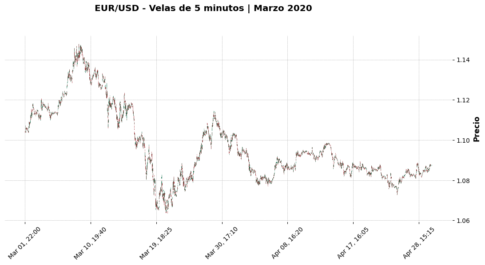
df_plot = df_5m.loc['2020-04-29'].copy()
df_plot = df_plot.rename(columns={
'BO': 'Open',
'BH': 'High',
'BL': 'Low',
'BC': 'Close'
})
mpf.plot(df_plot[['Open', 'High', 'Low', 'Close']],
type='candle',
style='charles',
title='EUR/USD - Velas de 5 minutos | Marzo 2020',
ylabel='Precio',
figsize=(14, 6))
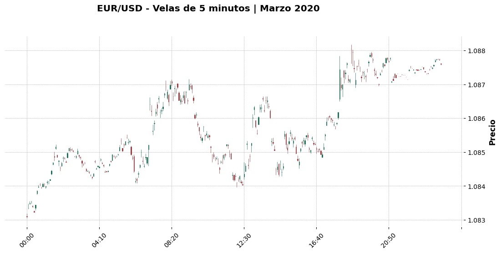
import matplotlib.pyplot as plt
plt.figure(figsize=(14, 5))
plt.plot(df_5m.index, df_5m['BC'], color='royalblue', linewidth=0.8)
plt.title('EUR/USD - Precio de Cierre | Bid')
plt.xlabel('Fecha')
plt.ylabel('Precio')
plt.xticks(rotation=30)
plt.tight_layout()
plt.show()
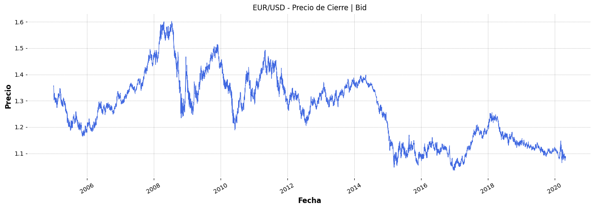
import matplotlib.pyplot as plt
df_plot = df_5m['2020-03-01':'2020-04-01'].copy()
df_plot['Rango'] = df_plot['BH'] - df_plot['BL']
df_plot['Spread'] = df_plot['AO'] - df_plot['BO']
fig, axes = plt.subplots(3, 1, figsize=(14, 10), sharex=True)
# Precio de cierre
axes[0].plot(df_plot.index, df_plot['BC'], color='royalblue', linewidth=0.8)
axes[0].set_title('Precio de Cierre | Bid')
axes[0].set_ylabel('Precio')
# Rango
axes[1].plot(df_plot.index, df_plot['Rango'], color='darkorange', linewidth=0.8)
axes[1].set_title('Rango de Vela | Volatilidad (BH - BL)')
axes[1].set_ylabel('Rango')
# Spread
axes[2].plot(df_plot.index, df_plot['Spread'], color='green', linewidth=0.8)
axes[2].set_title('Spread | Liquidez (AO - BO)')
axes[2].set_ylabel('Spread')
axes[2].set_xlabel('Fecha')
plt.suptitle('EUR/USD - Análisis de 5 minutos | Marzo 2020', fontsize=14)
plt.xticks(rotation=30)
plt.tight_layout()
plt.show()
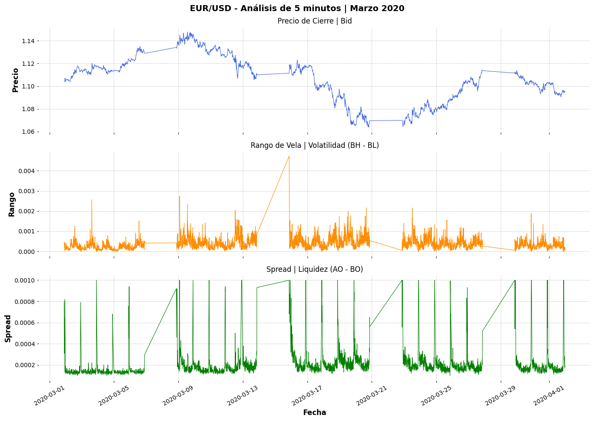
df_5m['Retorno'] = df_5m['BC'].pct_change() * 100
df_5m['Retorno_log'] = np.log(df_5m['BC'] / df_5m['BC'].shift(1))
fig, axes = plt.subplots(3, 1, figsize=(14, 10), sharex=True)
# Precio de cierre
axes[0].plot(df_5m.index, df_5m['BC'], color='royalblue', linewidth=0.5)
axes[0].set_title('Precio de Cierre | Bid')
axes[0].set_ylabel('Precio')
# Retorno %
axes[1].plot(df_5m.index, df_5m['Retorno'], color='darkorange', linewidth=0.5)
axes[1].set_title('Retorno | %')
axes[1].set_ylabel('Retorno %')
# Retorno logarítmico
axes[2].plot(df_5m.index, df_5m['Retorno_log'], color='green', linewidth=0.5)
axes[2].set_title('Retorno Logarítmico')
axes[2].set_ylabel('Retorno Log')
axes[2].set_xlabel('Fecha')
plt.suptitle('EUR/USD 2005-2020', fontsize=14)
plt.xticks(rotation=30)
plt.tight_layout()
plt.show()
df_plot = df_5m['2020-03-01':'2020-04-01'].copy()
df_plot['Retorno_log'] = np.log(df_plot['BC'] / df_plot['BC'].shift(1))
df_plot['Volatilidad'] = df_plot['Retorno_log'].rolling(window=12).std()
fig, axes = plt.subplots(2, 1, figsize=(14, 7), sharex=True)
# Precio de cierre
axes[0].plot(df_plot.index, df_plot['BC'], color='royalblue', linewidth=0.8)
axes[0].set_title('Precio de Cierre | Bid')
axes[0].set_ylabel('Precio')
# Volatilidad
axes[1].plot(df_plot.index, df_plot['Volatilidad'], color='red', linewidth=0.8)
axes[1].set_title('Volatilidad Rodante | 1 hora (12 velas de 5 min)')
axes[1].set_ylabel('Volatilidad')
axes[1].set_xlabel('Fecha')
plt.suptitle('EUR/USD - Volatilidad Rodante | Marzo 2020', fontsize=14)
plt.xticks(rotation=30)
plt.tight_layout()
plt.show()
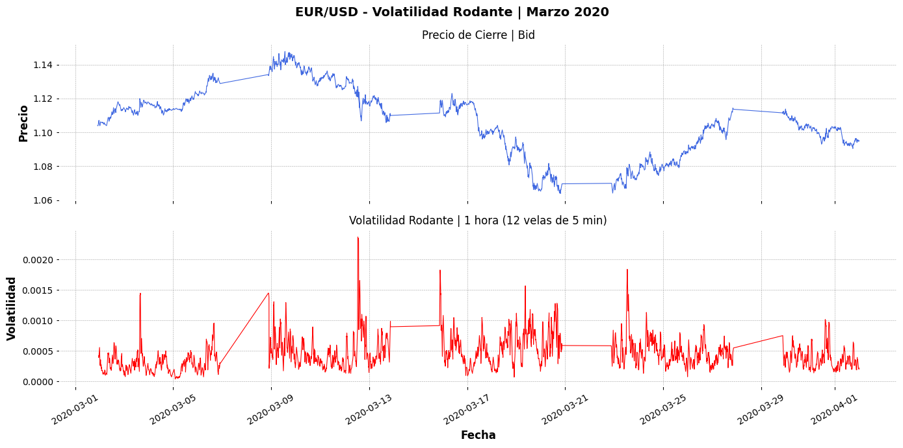
#1.1. Tendencia
from sklearn.linear_model import LinearRegression
import numpy as np
trend_model = LinearRegression(fit_intercept=True)
trend_model.fit(np.arange(df_5m.shape[0]).reshape((-1,1)), df_5m['BC'])
LinearRegression()In a Jupyter environment, please rerun this cell to show the HTML representation or trust the notebook.
On GitHub, the HTML representation is unable to render, please try loading this page with nbviewer.org.
LinearRegression()
print('Trend model coefficient={} and intercept={}'.format(trend_model.coef_[0], trend_model.intercept_))
Trend model coefficient=-2.335020739718395e-07 and intercept=1.4022674106390598
residuals = np.array(df_5m['BC']) - trend_model.predict(np.arange(df_5m.shape[0]).reshape((-1,1)))
residuals
array([-0.04676741, -0.04676718, -0.04616694, ..., -0.0450824 ,
-0.04511217, -0.04523194])
import matplotlib.pyplot as plt
plt.figure(figsize=(12, 5.5))
pd.Series(data=residuals, index=df_5m.index).plot(color='b')
plt.title('Residuos del Modelo de Tendencia del Precio de Cierre-Bid')
plt.xlabel('Time')
plt.ylabel('Residuos del Modelo de Tendencia del Precio de Cierre-Bid')
plt.xticks(rotation=30);
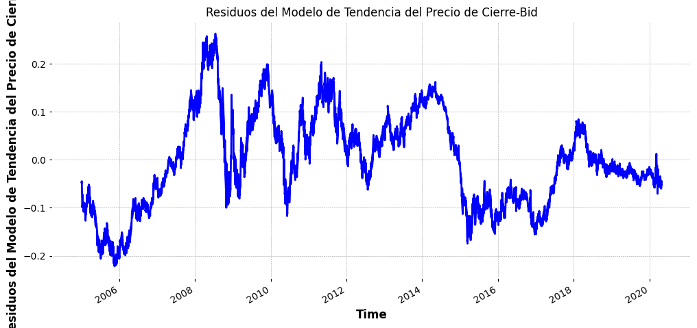
#1.2. Estacionalidad
#1.3. Gráfico de subserie estacional
# 1. Resamplea residuos a mensual
residuals_series = pd.Series(data=residuals, index=df_5m.index)
residuals_monthly = residuals_series.resample('M').median()
# 2. Crea el DataFrame base
data = residuals_monthly.reset_index()
data.columns = ['Date', 'Residuals']
data['Year'] = data['Date'].dt.year
data['Month'] = data['Date'].dt.month
# 3. Mapea trimestres
month_quarter_map = {1: 'Q1', 2: 'Q1', 3: 'Q1',
4: 'Q2', 5: 'Q2', 6: 'Q2',
7: 'Q3', 8: 'Q3', 9: 'Q3',
10: 'Q4', 11: 'Q4', 12: 'Q4'}
data['Quarter'] = data['Month'].map(lambda m: month_quarter_map.get(m))
# 4. Calcula media y desviación estándar trimestral
seasonal_sub_series_data = data.groupby(by=['Year', 'Quarter'])['Residuals'].aggregate([np.mean, np.std])
seasonal_sub_series_data.columns = ['Quarterly Mean', 'Quarterly Standard Deviation']
# 5. Crea índice Year-Quarter
seasonal_sub_series_data.reset_index(inplace=True)
seasonal_sub_series_data.index = seasonal_sub_series_data['Year'].astype(str) + '-' + seasonal_sub_series_data['Quarter']
print(seasonal_sub_series_data.head())
# 6. Grafica
plt.figure(figsize=(12, 5.5))
seasonal_sub_series_data['Quarterly Mean'].plot(color='b')
plt.title('Quarterly Mean of Residuals - EUR/USD')
plt.xlabel('Time')
plt.ylabel('Residuos Precio Cierre-Bid')
plt.xticks(rotation=30)
plt.show()
Year Quarter Quarterly Mean Quarterly Standard Deviation
2005-Q1 2005 Q1 -0.090163 0.009550
2005-Q2 2005 Q2 -0.138756 0.038245
2005-Q3 2005 Q3 -0.171438 0.013954
2005-Q4 2005 Q4 -0.198709 0.011792
2006-Q1 2006 Q1 -0.180489 0.008270
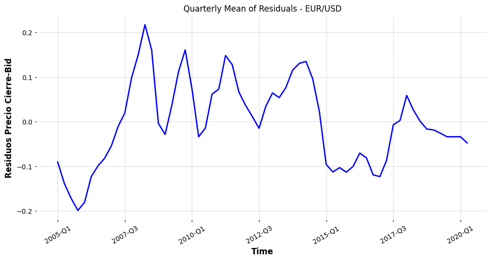
plt.figure(figsize=(12, 5.5))
seasonal_sub_series_data['Quarterly Standard Deviation'].plot(color='b')
plt.title('Quarterly Quarterly Standard Deviation of Residuals')
plt.xlabel('Time')
plt.ylabel('Precio de Cierre Bid')
plt.xticks(rotation=30);
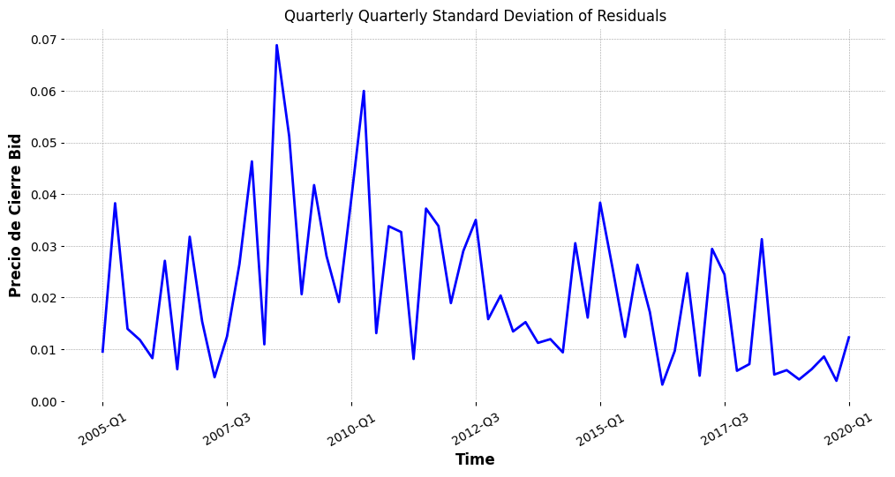
Gráficos de cajas múltiples
plt.figure(figsize=(12, 5.5))
g = sns.boxplot(data=data[data['Year'] > 2005], y='Residuals', x='Quarter')
g.set_title('Quarterly Boxplots of Residuals - EUR/USD')
g.set_xlabel('Quarter')
g.set_ylabel('Residuos Precio Cierre-Bid')
Text(0, 0.5, 'Residuos Precio Cierre-Bid')
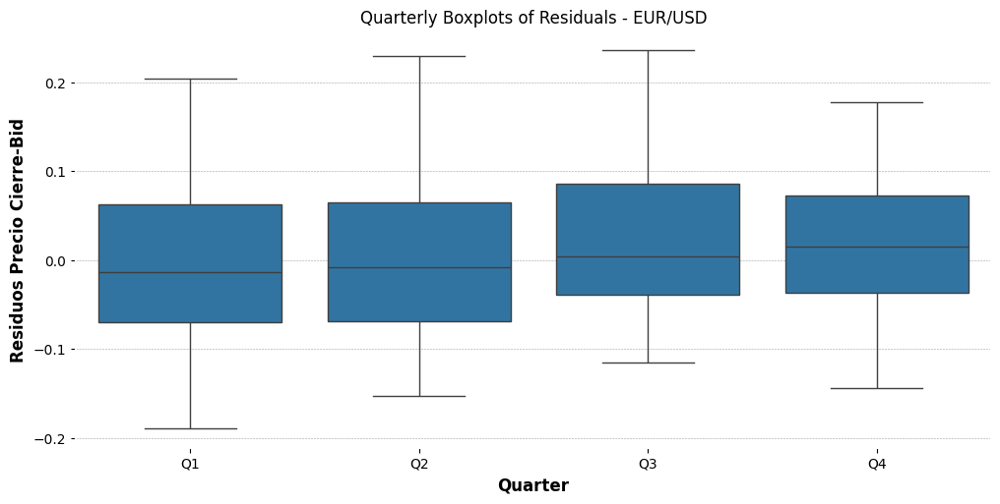
Comportamiento Cíclico
# Promedio anual del precio de cierre
annual = df_5m['BC'].resample('Y').median()
plt.figure(figsize=(12, 5.5))
plt.plot(annual.index.year, annual.values, linestyle='-', marker='*', color='r')
plt.title('Precio de Cierre-Bid EUR/USD por Año')
plt.ylabel('Precio')
plt.xlabel('Years')
plt.xticks(rotation=30)
plt.show()
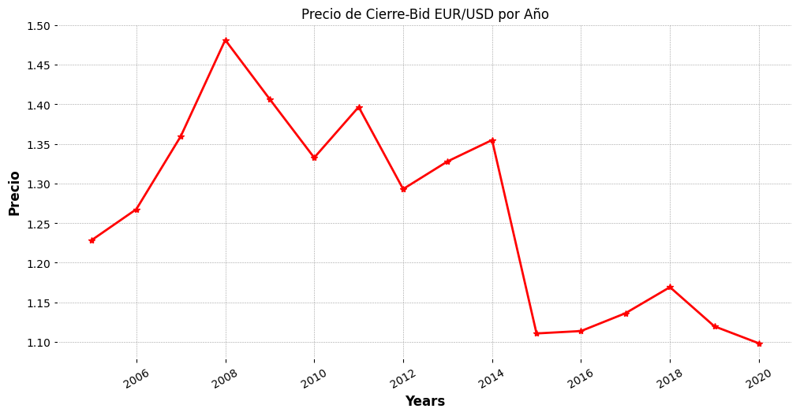
#1.3. Modelos irregulares
import numpy as np
import pandas as pd
import matplotlib.pyplot as plt
from statsmodels.tsa.seasonal import seasonal_decompose
from statsmodels.graphics.tsaplots import plot_acf, plot_pacf
import numpy as np
import pandas as pd
import matplotlib.pyplot as plt
from statsmodels.tsa.seasonal import seasonal_decompose
# Resamplea a mensual para que sea manejable
bc_monthly = df_5m['BC'].resample('M').median()
# Descomposición
decomposition = seasonal_decompose(bc_monthly, model='additive', period=12)
# Gráfica
plt.figure(figsize=(10, 8))
plt.subplot(411)
plt.plot(bc_monthly, label='Original')
plt.legend(loc='upper left')
plt.subplot(412)
plt.plot(decomposition.trend, label='Tendencia')
plt.legend(loc='upper left')
plt.subplot(413)
plt.plot(decomposition.seasonal, label='Estacionalidad')
plt.legend(loc='upper left')
plt.subplot(414)
plt.plot(decomposition.resid, label='Residuo (Irregular)')
plt.legend(loc='upper left')
plt.suptitle('Descomposición EUR/USD - Precio Cierre Bid')
plt.tight_layout()
plt.show()
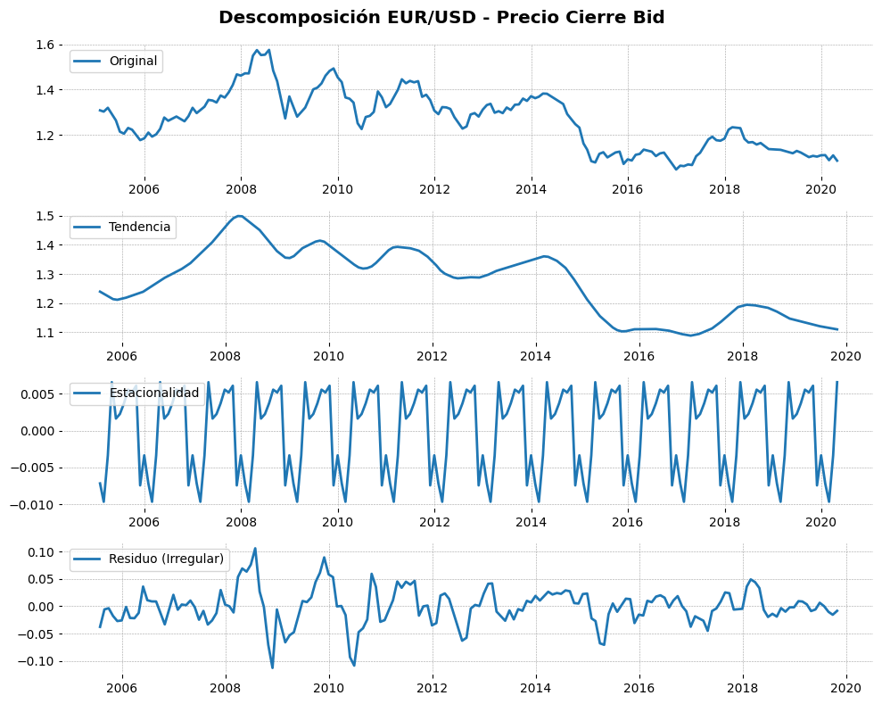
Modelos de análisis de series temporales
plt.figure(figsize=(12, 5.5))
g = sns.lineplot(data=df_5m['Retorno_log'].reset_index(drop=True))
g.set_title('Retornos Log EUR/USD')
g.set_xlabel('Time index')
g.set_ylabel('Retorno Log')
plt.figure(figsize=(12, 5.5))
g = sns.lineplot(data=df_5m['BC'].reset_index(drop=True))
g.set_title('Precio de cierre EUR/USD')
g.set_xlabel('Time index')
g.set_ylabel('Precio de cierre')
Text(0, 0.5, 'Precio de cierre')
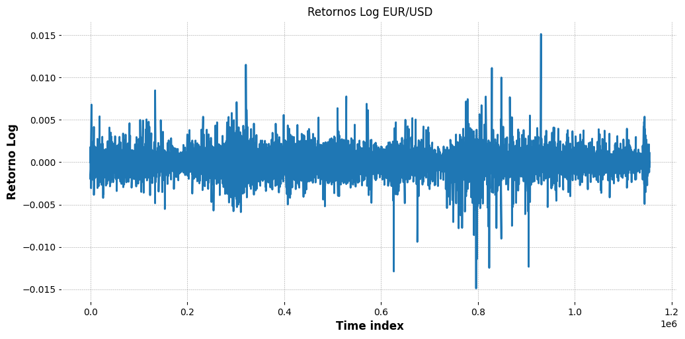
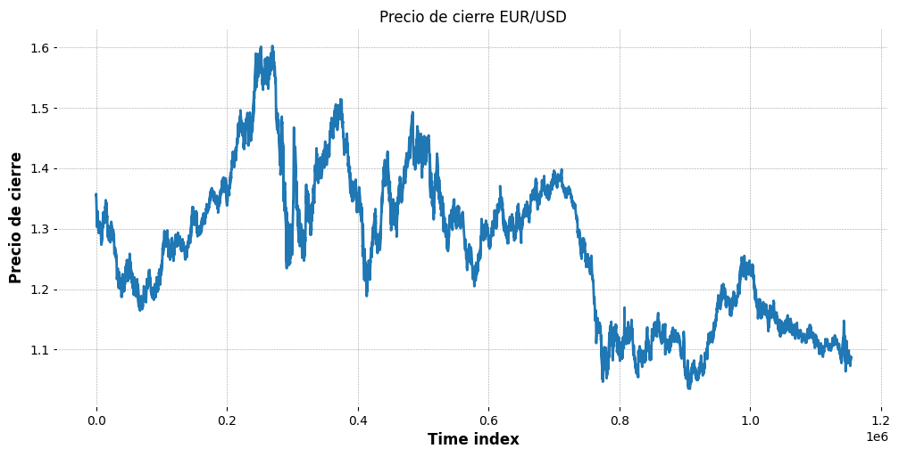
Camino Aleatorio
random_walk = np.cumsum(df_5m['Retorno_log'].dropna())
plt.figure(figsize=(5.5, 5.5))
g = sns.lineplot(data=random_walk.reset_index(drop=True))
g.set_title('Camino Aleatorio EUR/USD')
g.set_xlabel('Time index')
g.set_ylabel('Suma acumulada Retorno Log')
random_walk = np.cumsum(df_5m['BC'].dropna())
plt.figure(figsize=(5.5, 5.5))
g = sns.lineplot(data=random_walk.reset_index(drop=True))
g.set_title('Camino Aleatorio EUR/USD')
g.set_xlabel('Time index')
g.set_ylabel('Suma acumulada Precio de cierre')
Text(0, 0.5, 'Suma acumulada Precio de cierre')
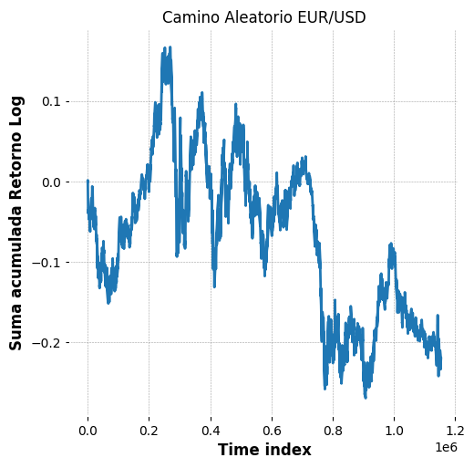
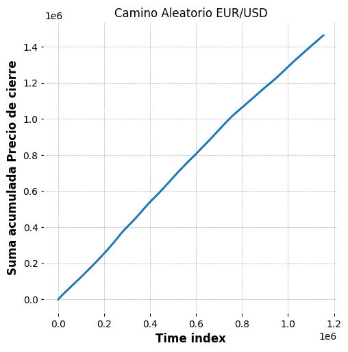
Modelos de tendencia
# Índice temporal
t = np.arange(df_5m.shape[0])
# Tendencia lineal ya calculada
fitted_trend_linear = trend_model.predict(t.reshape(-1, 1))
# Tendencia cuadrática con polyfit
coeffs_quadratic = np.polyfit(t, df_5m['BC'], 2)
fitted_trend_quadratic = np.polyval(coeffs_quadratic, t)
# Grafica
plt.figure(figsize=(12, 6))
plt.subplot(1, 2, 1)
plt.scatter(t[::1000], df_5m['BC'].values[::1000], color='gray', alpha=0.5, label='Datos observados')
plt.plot(t, fitted_trend_linear, color='red', label='Tendencia ajustada (lineal)')
plt.title('Modelo de tendencia lineal - EUR/USD')
plt.xlabel('Índice temporal')
plt.ylabel('Precio Cierre Bid')
plt.legend()
plt.subplot(1, 2, 2)
plt.scatter(t[::1000], df_5m['BC'].values[::1000], color='gray', alpha=0.5, label='Datos observados')
plt.plot(t, fitted_trend_quadratic, color='orange', label='Tendencia ajustada (cuadrática)')
plt.title('Modelo de tendencia cuadrática - EUR/USD')
plt.xlabel('Índice temporal')
plt.ylabel('Precio Cierre Bid')
plt.legend()
plt.tight_layout()
plt.show()
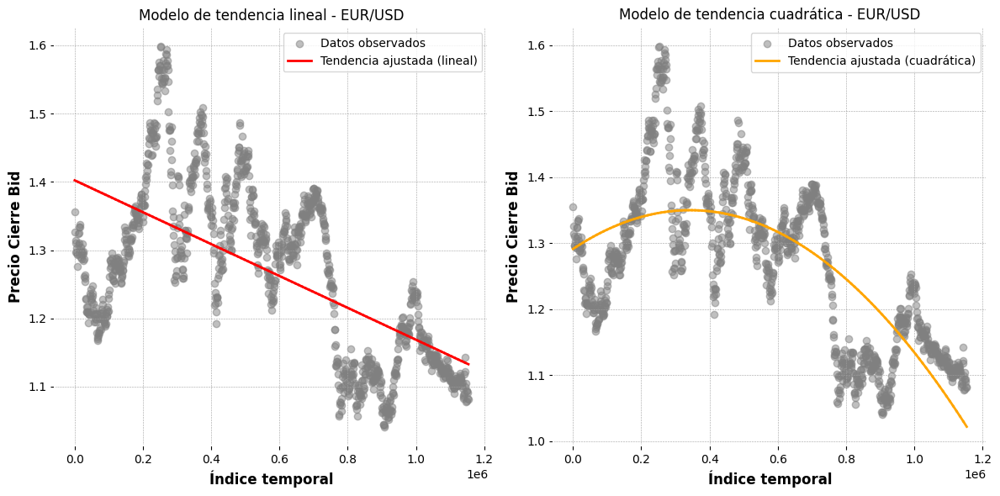
Autocorrelación y autocorrelación parcial
from statsmodels.graphics.tsaplots import plot_acf
# Diario
bc_daily = df_5m['BC'].resample('D').median().dropna()
plt.figure(figsize=(5.5, 5.5))
plot_acf(bc_daily, lags=30)
plt.title('Autocorrelation EUR/USD - Diario')
plt.show()
# 5 minutos
plt.figure(figsize=(5.5, 5.5))
plot_acf(df_5m['BC'], lags=30)
plt.title('Autocorrelation EUR/USD - 5 minutos')
plt.show()
<Figure size 550x550 with 0 Axes>
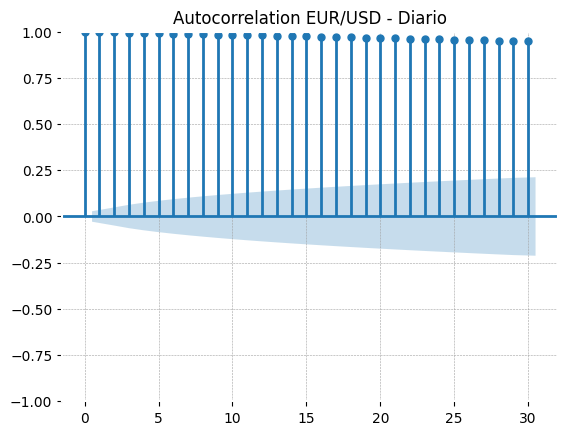
Autocorrelación Parcial
plt.figure(figsize=(5.5, 5.5));
plot_pacf(df_5m['BC'], lags=31);
<Figure size 550x550 with 0 Axes>
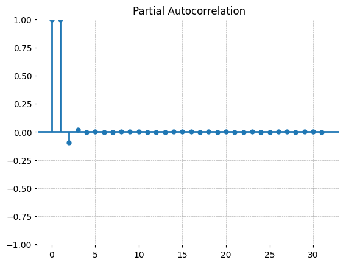
Análisis de datos de series temporales
Remuestreo de datos de series temporales
La técnica de remuestreo se ha aplicado en las secciones anteriores para realizar análisis de tendencia, ciclo y estacionalidad, además de usarlas para comparar el comportamiento de autocorrelación en un nivel de agregación mayor.
import pandas as pd
import numpy as np
from matplotlib import pyplot as plt
Se realiza el remuestreo para comparar el precio de cierre cada 5 minutos y diario.
bc_5min_window = df_5m['BC']['2020-03-30':'2020-04-29']
bc_daily_window = df_5m['BC'].resample('D').mean()['2020-03-30':'2020-04-29']
fig = plt.figure(figsize=(10, 5))
ax = fig.add_subplot(1,1,1)
bc_5min_window.plot(ax=ax, color='b', alpha=0.5)
bc_daily_window.plot(ax=ax, color='r', linewidth=2)
ax.set_title('EUR/USD - Precio cada 5 min (azul) & Media Diaria (rojo) | Últimos 30 días')
ax.set_xlabel('Fecha')
ax.set_ylabel('Precio Cierre Bid')
Text(0, 0.5, 'Precio Cierre Bid')
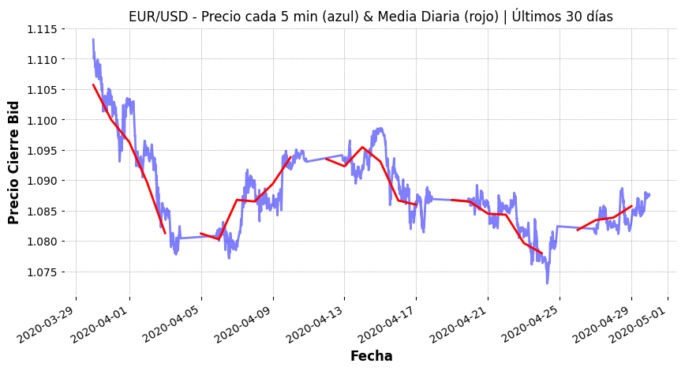
Se compara el precio de cierre agrupado a nivel mensual y se compara con su desviación estándar
# Paso 1 - De 5 minutos a diario
df_daily = df_5m['BC'].resample('D').mean().reset_index()
df_daily.columns = ['Date', 'BC']
df_daily.set_index('Date', inplace=True)
# Paso 2 - Agregar columna Month_Year
df_daily['Month_Year'] = df_daily.index.map(lambda d: d.strftime('%m-%Y'))
print(df_daily.head())
# Paso 3 - Estadísticas mensuales
monthly_stats = df_daily.groupby(by='Month_Year')['BC'].aggregate([np.mean, np.median, np.std])
monthly_stats.reset_index(inplace=True)
# Paso 4 - Ordenar por año y mes
monthly_stats['Year'] = monthly_stats['Month_Year'].map(lambda m: pd.to_datetime(m, format='%m-%Y').strftime('%Y'))
monthly_stats['Month'] = monthly_stats['Month_Year'].map(lambda m: pd.to_datetime(m, format='%m-%Y').strftime('%m'))
monthly_stats.sort_values(by=['Year', 'Month'], inplace=True)
print(monthly_stats.head())
# Paso 5 - Grafica
monthly_stats.index = monthly_stats['Month_Year']
fig, ax1 = plt.subplots(figsize=(12, 5))
# Media en eje izquierdo
ax1.plot(monthly_stats['mean'].values, color='b', label='Media')
ax1.set_ylabel('Media Precio Cierre Bid', color='b')
ax1.tick_params(axis='y', labelcolor='b')
# Std en eje derecho
ax2 = ax1.twinx()
ax2.plot(monthly_stats['std'].values, color='r', label='Std')
ax2.set_ylabel('Desviación Estándar', color='r')
ax2.tick_params(axis='y', labelcolor='r')
plt.title('EUR/USD - Media mensual (azul) & Desv. Estándar (rojo)')
plt.xticks(range(0, len(monthly_stats), 12), monthly_stats['Month_Year'].values[::12], rotation=45)
plt.tight_layout()
plt.show()
BC Month_Year
Date
2005-01-02 1.355530 01-2005
2005-01-03 1.348946 01-2005
2005-01-04 1.337940 01-2005
2005-01-05 1.326501 01-2005
2005-01-06 1.320725 01-2005
Month_Year mean median std Year Month
0 01-2005 1.312890 1.307208 0.014921 2005 01
16 02-2005 1.301424 1.302746 0.015242 2005 02
32 03-2005 1.319119 1.321176 0.018217 2005 03
48 04-2005 1.293964 1.292261 0.007341 2005 04
64 05-2005 1.268895 1.263558 0.015837 2005 05
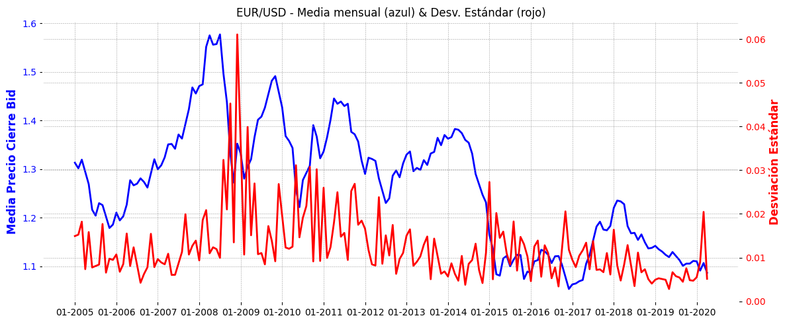
Estadísticos móviles
# Medias móviles
daily_moving_average = df_5m['BC'].rolling(24*12).mean() # 1 día en periodos de 5 min
weekly_moving_average = df_5m['BC'].rolling(7*24*12).mean() # 7 días en periodos de 5 min
monthly_moving_average = df_5m['BC'].rolling(30*24*12).mean() # 30 días en periodos de 5 min
fig, axarr = plt.subplots(4, sharex=True)
fig.set_size_inches(12, 10)
df_5m['BC'].plot(ax=axarr[0], color='b')
axarr[0].set_title('Precio Cierre Bid EUR/USD - 5 min')
daily_moving_average.plot(ax=axarr[1], color='orange')
axarr[1].set_title('Media Móvil Diaria')
weekly_moving_average.plot(ax=axarr[2], color='r')
axarr[2].set_title('Media Móvil Semanal')
monthly_moving_average.plot(ax=axarr[3], color='g')
axarr[3].set_title('Media Móvil Mensual')
plt.tight_layout()
plt.show()
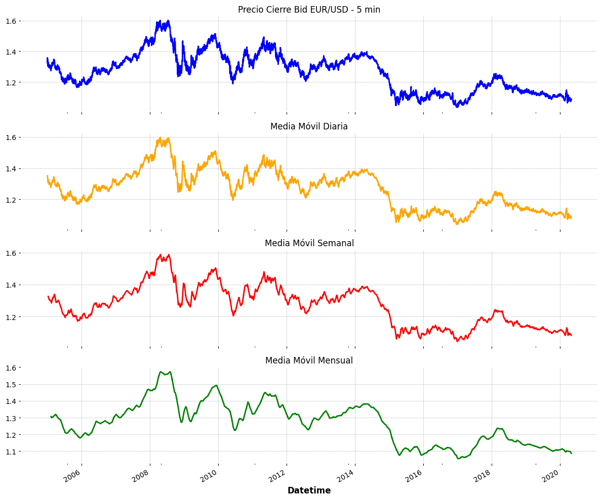
Procesos estacionarios
Transformación de datos y ajustes
Ajustes estacionales y de tendencia
Diferenciación
from random import seed
from pandas import Series
import random
from pandas.plotting import autocorrelation_plot
import matplotlib.pyplot as plt
import numpy as np
from statsmodels.tsa import stattools
from pandas.plotting import autocorrelation_plot
first_order_diff = df_5m['BC'].diff(1)
first_order_diff
Datetime
2005-01-02 18:25:00 NaN
2005-01-02 18:35:00 0.000000
2005-01-02 18:50:00 0.000600
2005-01-02 18:55:00 0.000150
2005-01-02 19:00:00 0.000150
...
2020-04-29 23:35:00 0.000145
2020-04-29 23:40:00 0.000030
2020-04-29 23:45:00 0.000010
2020-04-29 23:50:00 -0.000030
2020-04-29 23:55:00 -0.000120
Name: BC, Length: 1153890, dtype: float64
fig, ax = plt.subplots(2, sharex=True)
fig.set_size_inches(12, 10)
df_5m['BC'].plot(ax=ax[0], color='b');
ax[0].set_title('BC');
first_order_diff.plot(ax=ax[1], color='r');
ax[1].set_title('First-order differences of BC');
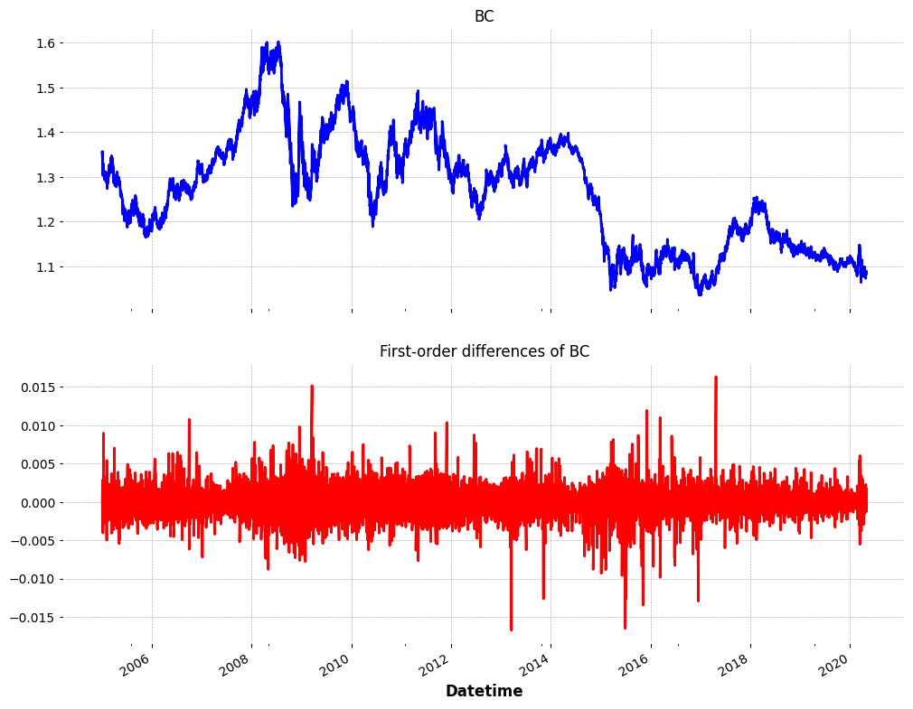
from pandas.plotting import autocorrelation_plot
bc_daily = df_5m['BC'].resample('D').median().dropna()
first_order_diff = bc_daily.diff().dropna()
fig, ax = plt.subplots(2, sharex=True)
fig.set_size_inches(12, 10)
autocorrelation_plot(bc_daily, color='b', ax=ax[0])
ax[0].set_title('ACF of EUR/USD Close values')
autocorrelation_plot(first_order_diff.iloc[1:], color='r', ax=ax[1])
ax[1].set_title('ACF of first differences of EUR/USD Close values')
plt.tight_layout(pad=0.4, w_pad=0.5, h_pad=2.0)
plt.show()
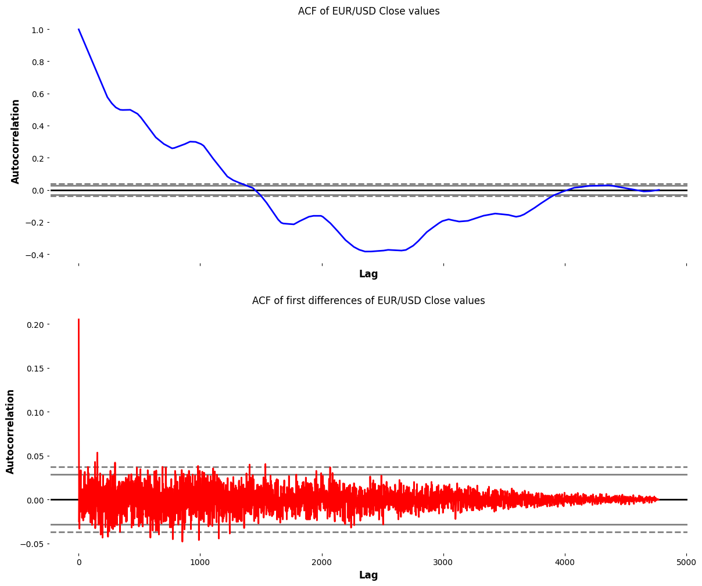
acf_BC, confint_BC, qstat_BC, pvalues_BC = stattools.acf(df_5m['BC'],
nlags=20,
qstat=True,
alpha=0.05)
alpha = 0.05
for l, p_val in enumerate(pvalues_BC):
if p_val > alpha:
print('Null hypothesis is accepted at lag = {} for p-val = {}'.format(l, p_val))
else:
print('Null hypothesis is rejected at lag = {} for p-val = {}'.format(l, p_val))
Null hypothesis is rejected at lag = 0 for p-val = 0.0
Null hypothesis is rejected at lag = 1 for p-val = 0.0
Null hypothesis is rejected at lag = 2 for p-val = 0.0
Null hypothesis is rejected at lag = 3 for p-val = 0.0
Null hypothesis is rejected at lag = 4 for p-val = 0.0
Null hypothesis is rejected at lag = 5 for p-val = 0.0
Null hypothesis is rejected at lag = 6 for p-val = 0.0
Null hypothesis is rejected at lag = 7 for p-val = 0.0
Null hypothesis is rejected at lag = 8 for p-val = 0.0
Null hypothesis is rejected at lag = 9 for p-val = 0.0
Null hypothesis is rejected at lag = 10 for p-val = 0.0
Null hypothesis is rejected at lag = 11 for p-val = 0.0
Null hypothesis is rejected at lag = 12 for p-val = 0.0
Null hypothesis is rejected at lag = 13 for p-val = 0.0
Null hypothesis is rejected at lag = 14 for p-val = 0.0
Null hypothesis is rejected at lag = 15 for p-val = 0.0
Null hypothesis is rejected at lag = 16 for p-val = 0.0
Null hypothesis is rejected at lag = 17 for p-val = 0.0
Null hypothesis is rejected at lag = 18 for p-val = 0.0
Null hypothesis is rejected at lag = 19 for p-val = 0.0
acf_first_diff, confint_first_diff,\
qstat_first_diff, pvalues_first_diff = stattools.acf(first_order_diff.iloc[1:],
nlags=20,
qstat=True,
alpha=0.05)
alpha = 0.05
for l, p_val in enumerate(pvalues_first_diff):
if p_val > alpha:
print('Null hypothesis is accepted at lag = {} for p-val = {}'.format(l, p_val))
else:
print('Null hypothesis is rejected at lag = {} for p-val = {}'.format(l, p_val))
Null hypothesis is rejected at lag = 0 for p-val = 1.2272822948081776e-45
Null hypothesis is rejected at lag = 1 for p-val = 1.568828974253562e-44
Null hypothesis is rejected at lag = 2 for p-val = 1.7686297922617214e-43
Null hypothesis is rejected at lag = 3 for p-val = 3.3068872748673155e-43
Null hypothesis is rejected at lag = 4 for p-val = 1.6412028195765364e-42
Null hypothesis is rejected at lag = 5 for p-val = 4.3175352336063026e-42
Null hypothesis is rejected at lag = 6 for p-val = 2.033537024347313e-42
Null hypothesis is rejected at lag = 7 for p-val = 9.778278312981476e-42
Null hypothesis is rejected at lag = 8 for p-val = 1.407041510332198e-41
Null hypothesis is rejected at lag = 9 for p-val = 5.429461874674374e-41
Null hypothesis is rejected at lag = 10 for p-val = 2.373243304169236e-40
Null hypothesis is rejected at lag = 11 for p-val = 1.033925571044662e-39
Null hypothesis is rejected at lag = 12 for p-val = 4.509629219379712e-39
Null hypothesis is rejected at lag = 13 for p-val = 6.350361593407162e-39
Null hypothesis is rejected at lag = 14 for p-val = 2.1602795118702662e-38
Null hypothesis is rejected at lag = 15 for p-val = 5.464044066903778e-38
Null hypothesis is rejected at lag = 16 for p-val = 9.493057276127367e-38
Null hypothesis is rejected at lag = 17 for p-val = 2.936492691503753e-38
Null hypothesis is rejected at lag = 18 for p-val = 1.0032505431373221e-37
Null hypothesis is rejected at lag = 19 for p-val = 2.627003639545754e-37
Podemos ver su comportamiento estacional y aplicar las pruebas de ACF y ACF parcial
fig = plt.figure(figsize=(12, 5))
ax = fig.add_subplot(1,1,1)
ax.set_title('Precio diario EUR/USD')
df_daily.plot(ax=ax)
plt.show()
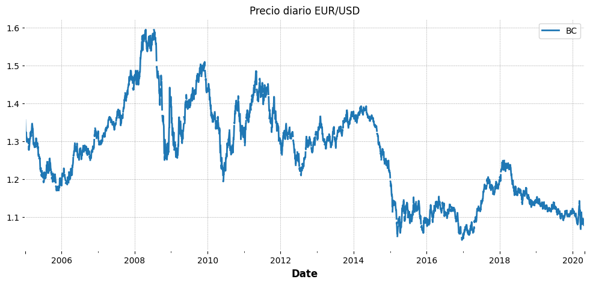
monthly_resample = df_5m['BC'].resample('M')
monthly_mean_bc = monthly_resample.mean()
print('Shape of monthly mean EUR/USD dataset:', monthly_mean_bc.shape)
print(monthly_mean_bc.head())
fig = plt.figure(figsize=(12, 5))
ax = fig.add_subplot(1,1,1)
ax.set_title('Monthly mean EUR/USD - Precio Cierre Bid')
monthly_mean_bc.plot(ax=ax)
plt.show()
Shape of monthly mean EUR/USD dataset: (184,)
Datetime
2005-01-31 1.312525
2005-02-28 1.301520
2005-03-31 1.318475
2005-04-30 1.293962
2005-05-31 1.269107
Freq: ME, Name: BC, dtype: float64
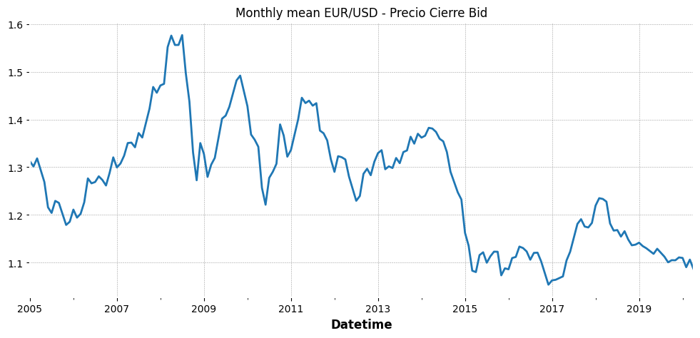
fig = plt.figure(figsize=(12, 5))
ax = fig.add_subplot(1,1,1)
ax.set_title('ACF of monthly mean EUR/USD')
autocorrelation_plot(monthly_mean_bc, ax=ax)
plt.show()
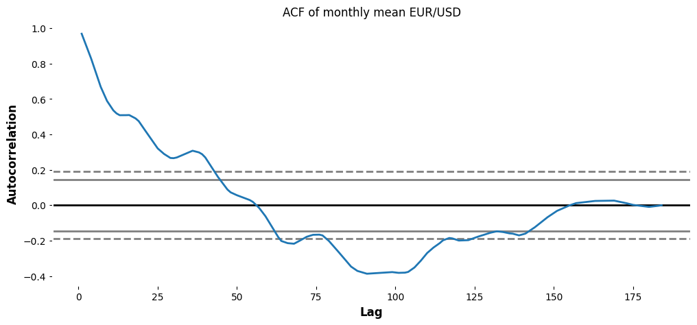
seasonal_diff = monthly_mean_bc.diff(12)
seasonal_diff = seasonal_diff[12:]
fig = plt.figure(figsize=(12, 5))
ax = fig.add_subplot(1,1,1)
ax.set_title('Seasonal differences EUR/USD')
seasonal_diff.plot(ax=ax)
plt.show()
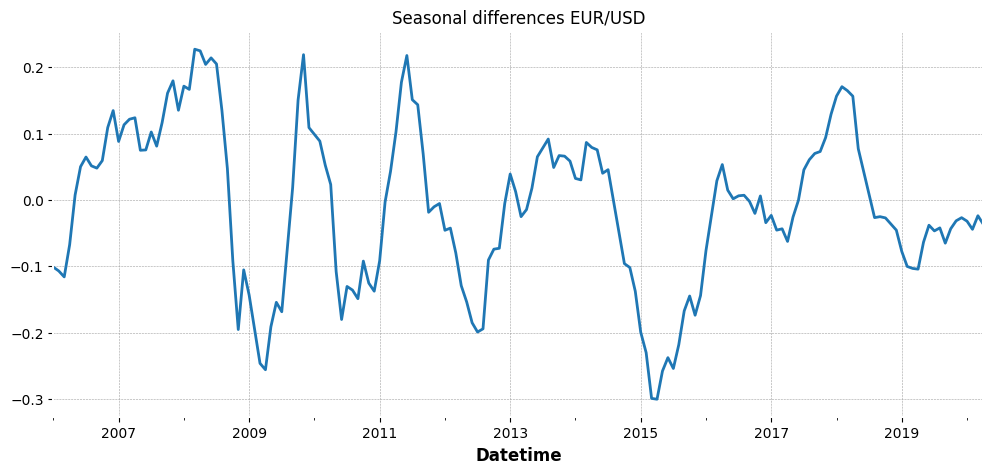
fig = plt.figure(figsize=(12, 5))
ax = fig.add_subplot(1,1,1)
ax.set_title('ACF of Seasonal differences EUR/USD')
autocorrelation_plot(seasonal_diff, ax=ax)
plt.show()
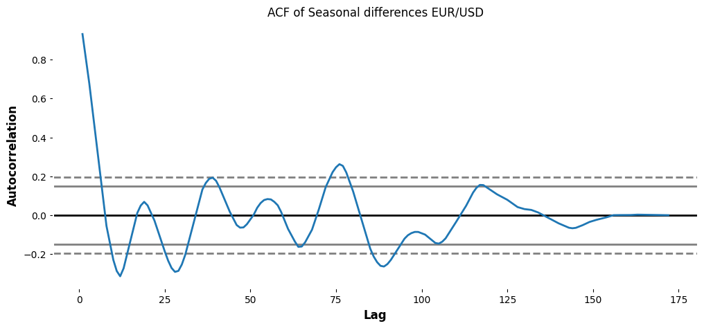
from statsmodels.tsa import stattools
# Ljung-Box sobre media mensual
_, _, _, pval_monthly_mean = stattools.acf(monthly_mean_bc, nlags=10, qstat=True, alpha=0.05)
print('Null hypothesis is rejected for lags:', np.where(pval_monthly_mean <= 0.05))
# Ljung-Box sobre diferencias estacionales
_, _, _, pval_seasonal_diff = stattools.acf(seasonal_diff, nlags=10, qstat=True, alpha=0.05)
print('Null hypothesis is rejected for lags:', np.where(pval_seasonal_diff <= 0.05))
Null hypothesis is rejected for lags: (array([0, 1, 2, 3, 4, 5, 6, 7, 8, 9], dtype=int64),)
Null hypothesis is rejected for lags: (array([0, 1, 2, 3, 4, 5, 6, 7, 8, 9], dtype=int64),)
Prueba de Dickey-Fuller
adf_result = stattools.adfuller(df_5m['BC'], autolag='AIC')
print('p-val of the ADF test in EUR/USD monthly mean:', adf_result[1])
p-val of the ADF test in EUR/USD monthly mean: 0.4329592567477676
Descomposición de series temporales
Medias móviles y efectos de suavización
# Resamplear a diario
bc_daily_ma = df_5m['BC'].resample('D').mean().dropna()
# Media móvil de 5 días
bc_daily_ma_5 = bc_daily_ma.rolling(5).mean()
# Grafica
fig = plt.figure(figsize=(12, 5.5))
ax = fig.add_subplot(2,1,1)
bc_daily_ma.plot(ax=ax, color='b')
ax.set_title('EUR/USD Precio Cierre Bid Diario 2005-2020')
ax = fig.add_subplot(2,1,2)
bc_daily_ma_5.plot(ax=ax, color='r')
ax.set_title('5-day Moving Average')
plt.tight_layout(pad=0.4, w_pad=0.5, h_pad=2.0)
plt.show()
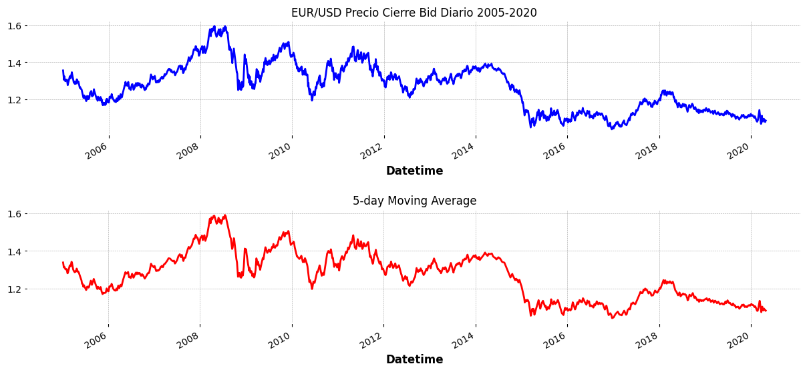
# Medias móviles
MA2 = bc_daily_ma.rolling(window=2).mean()
TwoXMA2 = MA2.rolling(window=2).mean()
MA4 = bc_daily_ma.rolling(window=4).mean()
TwoXMA4 = MA4.rolling(window=4).mean()
MA3 = bc_daily_ma.rolling(window=3).mean()
ThreeXMA3 = MA3.rolling(window=3).mean()
# Eliminar NaN
TwoXMA2 = TwoXMA2.dropna()
TwoXMA4 = TwoXMA4.dropna()
ThreeXMA3 = ThreeXMA3.dropna()
# Grafica
f, axarr = plt.subplots(3, sharex=False)
f.set_size_inches(12, 10)
bc_daily_ma.iloc[:45].plot(color='b', linestyle='-', ax=axarr[0])
MA2.iloc[:45].plot(color='r', linestyle='--', ax=axarr[0])
TwoXMA2.iloc[:45].plot(color='g', linestyle='--', ax=axarr[0])
axarr[0].set_title('2 day MA & 2X2 day MA')
bc_daily_ma.iloc[:45].plot(color='b', linestyle='-', ax=axarr[1])
MA4.iloc[:45].plot(color='r', linestyle='--', ax=axarr[1])
TwoXMA4.iloc[:45].plot(color='g', linestyle='--', ax=axarr[1])
axarr[1].set_title('4 day MA & 2X4 day MA')
bc_daily_ma.iloc[:45].plot(color='b', linestyle='-', ax=axarr[2])
MA3.iloc[:45].plot(color='r', linestyle='--', ax=axarr[2])
ThreeXMA3.iloc[:45].plot(color='g', linestyle='--', ax=axarr[2])
axarr[2].set_title('3 day MA & 3X3 day MA')
plt.tight_layout()
plt.show()
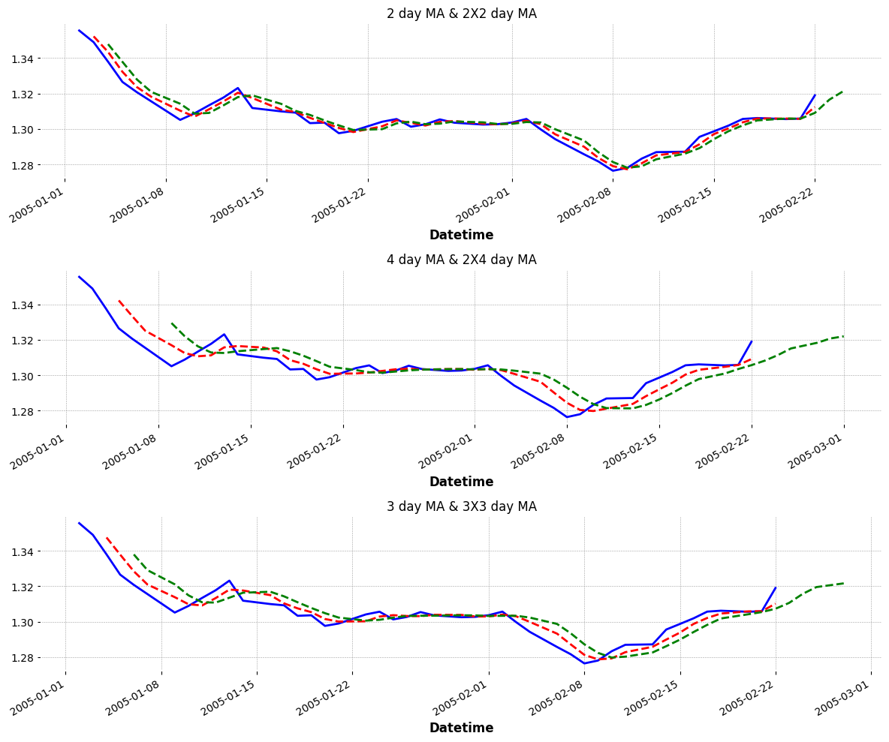
Ajuste estacional mediante media móvil#
El EUR/USD muestra una serie temporal no estacionaria con memoria persistente, confirmada por la prueba ADF (p-val = 0.43) y la autocorrelación significativa en todos los rezagos analizados. La serie presenta una tendencia no lineal clara: una fase alcista entre 2005 y 2008 que llevó el par hasta niveles de 1.60, seguida de una caída abrupta durante la crisis financiera de 2008-2009, una recuperación parcial hasta 2011, y una tendencia bajista sostenida desde 2014 que estabilizó el precio alrededor de 1.10. La descomposición mensual revela que la variabilidad del precio es baja y relativamente constante a lo largo del tiempo, con una desviación estándar mensual que no supera 0.05, lo que indica que aunque el nivel del precio cambia estructuralmente, la volatilidad intrínseca de la serie es estable.
MA4 = bc_daily_ma.rolling(window=90).mean()
TwoXMA4 = MA4.rolling(window=2).mean()
TwoXMA4 = TwoXMA4.loc[~pd.isnull(TwoXMA4)]
fig = plt.figure(figsize=(12, 5.5))
ax = fig.add_subplot(1,1,1)
bc_daily_ma.plot(ax=ax, color='b', linestyle='-')
TwoXMA4.plot(ax=ax, color='r', linestyle='-')
plt.xticks(rotation=60)
ax.set_title('EUR/USD Precio Diario y 2X4 Quarter MA')
plt.tight_layout()
plt.show()
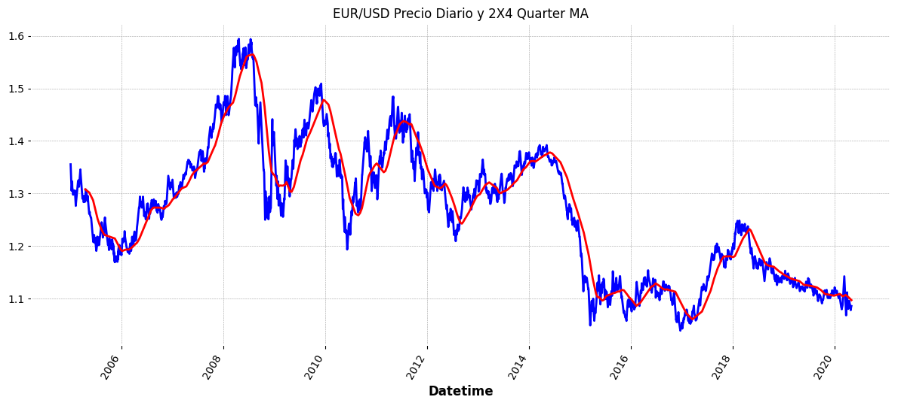